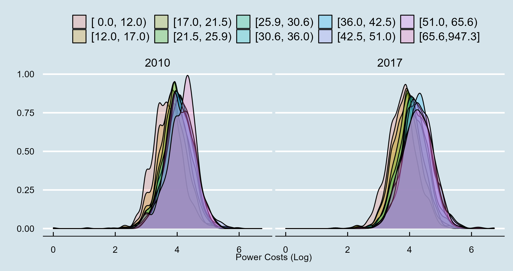

German Socio-Economic Panel Study (SOEP)
Introduction
Most of the data we use to feed our model comes from the German Socio-Economic Panel Study (SOEP). The SOEP is a representative longitudinal panel study that started in West Germany in 1984. The current version of the survey contains a large set of socio-demographic and economic characteristics of German households.
The SOEP is divided into different data files each containing different questionnaires – in this model, we use data from SOEP-37.
The main questionnaires we use for the construction of the model are:
- PEQUIV - Personal Equivalent File \(\rightarrow\) (Documentation)
- HGEN - Household Generated Data File \(\rightarrow\) (Documentation)
- HWEALTH - Household Wealth Questionaire
- HCONSUM - Household Consumption Module
Personal Equivalent Data File
All of our variables are loded in one of two R formats; numeric or haven-labeled. Haven labeled format is similar to STATA (or SPSS) labeled data (For more information we refer the reader to the online vignete of the haven package).
The R-labeled class (part of the haven package) allows us to associate arbitrary labels to numeric or character vectors. Note that the goal of labeled files is only to include the description of categorical vectors in the SOEP data. For instance, when printing one labeled variable, the output consists of a vector of values alongside a data frame linking values and labels. It is essential to clarify that researchers must transform haven-labeled data formats into numeric or factor variables before using them in econometric, machine learning, or optimization models. Still, we keep the haven-labeled format in the raw files as it allows researchers to directly understand the values related to each numeric identifier of categorical variables in the SOEP data.
As an example, we show the gender column in the pequiv file. The variable contains a title identifier Gender of Individual alongside a vector of numeric values (i.e., 2,1,2,1,1,2), and the data frame linking values to labels.
Show the Code
# Show the data set
head(pequiv$sex)<labelled<double>[6]>: Gender of Individual
[1] 2 1 2 1 1 2
Labels:
value label
-6 [-6] Fragebogenversion mit geaenderter Filterfuehrung
-5 [-5] In Fragebogenversion nicht enthalten
-4 [-4] Unzulaessige Mehrfachantwort
-3 [-3] nicht valide
-2 [-2] trifft nicht zu
-1 [-1] keine Angabe
1 [1] Male 1
2 [2] Female 2Table 1 shows a sample of individual-level characteristics we extract from the PEQUIV file. It consists of 19 variables and 547704 observations between 2005 and 2018. Each variable is either in a numeric or haven-labeled format. The data frame contains the individual and household IDs (pid and hid) alongside the year of the interview (year). head is an indicator variable on the relationship between pid and the household head (1 = head, 2 = partner, 3 = child, 4 = relative, and 5 = non-relative). age is the average age of pid, sex its gender (1 - Male; 2- Female), and education the total years of education.
Show the Code
# Show the data set
kbl(select(pequiv, pid, hid, year, head, sex, age, education) %>% head(.)) %>%
kable_classic(full_width = T, html_font = "Cambria") %>%
kable_styling(bootstrap_option = c("hover"))| pid | hid | year | head | sex | age | education |
|---|---|---|---|---|---|---|
| 201 | 27 | 2005 | 1 | 2 | 79 | 10.5 |
| 203 | 60313 | 2005 | 1 | 1 | 45 | 18.0 |
| 602 | 60 | 2005 | 1 | 2 | 47 | 18.0 |
| 603 | 60 | 2005 | 2 | 1 | 59 | -2.0 |
| 604 | 60 | 2005 | 3 | 1 | 15 | -1.0 |
| 605 | 60 | 2005 | 3 | 2 | 9 | -1.0 |
Show the Code
# Show the data set
kbl(select(pequiv, pid, hid, year, state, region) %>% head(.)) %>%
kable_classic(full_width = T, html_font = "Cambria") %>%
kable_styling(bootstrap_option = c("hover"))| pid | hid | year | state | region |
|---|---|---|---|---|
| 201 | 27 | 2005 | 11 | 1 |
| 203 | 60313 | 2005 | 11 | 1 |
| 602 | 60 | 2005 | 5 | 1 |
| 603 | 60 | 2005 | 5 | 1 |
| 604 | 60 | 2005 | 5 | 1 |
| 605 | 60 | 2005 | 5 | 1 |
Show the Code
# Show the data set
kbl(select(pequiv, pid, hid, year, employment, occupation, industry1) %>% head(.)) %>%
kable_classic(full_width = T, html_font = "Cambria") %>%
kable_styling(bootstrap_option = c("hover"))| pid | hid | year | employment | occupation | industry1 |
|---|---|---|---|---|---|
| 201 | 27 | 2005 | 0 | 0 | 0 |
| 203 | 60313 | 2005 | 1 | 2131 | 9 |
| 602 | 60 | 2005 | 0 | 2331 | 9 |
| 603 | 60 | 2005 | 0 | -2 | -2 |
| 604 | 60 | 2005 | -1 | -2 | -1 |
| 605 | 60 | 2005 | -1 | -2 | -1 |
Show the Code
# Show the data set
kbl(select(pequiv, pid, hid, year, Npersons, Nkids, income, GrossIncome) %>% head(.)) %>%
kable_classic(full_width = T, html_font = "Cambria") %>%
kable_styling(bootstrap_option = c("hover"))| pid | hid | year | Npersons | Nkids | income | GrossIncome |
|---|---|---|---|---|---|---|
| 201 | 27 | 2005 | 1 | 0 | 7648 | 209 |
| 203 | 60313 | 2005 | 1 | 0 | 18800 | 7550 |
| 602 | 60 | 2005 | 4 | 2 | 47146 | 68521 |
| 603 | 60 | 2005 | 4 | 2 | 47146 | 68521 |
| 604 | 60 | 2005 | 4 | 2 | 47146 | 68521 |
| 605 | 60 | 2005 | 4 | 2 | 47146 | 68521 |
Table 2 includes data on the spatial location of the household. Because we are working with the open version of the SOEP, we can only identify the state and region where the household is located. Next, Table 3 contains employment-related covariates. employment is a dummy variable equal to one if the person is currently employed. occupation is the person’s occupation according to the International Classification of Occupations Code (ISCO). For instance, code 5160 refers to protective service workers. industry1 is a two-digit industry code based on ten categories (1 – Agriculture, 2 – Energy, 3 – Mining, 4 – Manufacturing, 5 – Construction, 6 – Trade, 7 – Transport, 8 – Bank and Insurance, 9 – Services). Finally, Table 4 includes a set of household-level controls we extract from the PEQUIV file. Npersons and Nkids are the number of persons and kids in the household, while income and GrossIncome are the household net and gross incomes.
Household Generated Variables File (HGEN)
Table 5 shows a sample of household-level identifiers we extract from the HGEN file. The full data-frame contains 34 variables and 213,595 observations across 40,852 spanning between 2005 and 2018. hid and year are analogous to the pequiv file. Owner is an indicator variable based on four categories (1 – Owner, 2 – Main Tenant, 3 – Sub-Tenant, 4 – Tenant, 5 – Living in a home). FreeRent is a dummy variable equal to one if the family does not pay rent. YearMoved refers to the year the family moved to the household. And HouseSize Is the size of the dwelling in square meters.
Show the Code
kbl(select(hgen, hid, year, owner, FreeRent, YearMoved, HouseSize) %>% head(.)) %>%
kable_classic(full_width = T, html_font = "Cambria") %>%
kable_styling(bootstrap_option = c("hover"))| hid | year | owner | FreeRent | YearMoved | HouseSize |
|---|---|---|---|---|---|
| 27 | 2005 | 2 | -2 | 1994 | 43 |
| 60 | 2005 | 1 | -2 | 1994 | 130 |
| 94 | 2005 | 2 | -2 | 2002 | 48 |
| 124 | 2005 | 2 | -2 | 2002 | 36 |
| 159 | 2005 | 2 | 1 | 1990 | 120 |
| 167 | 2005 | 2 | -2 | 2000 | 83 |
Show the Code
kbl(select(hgen, hid, year, basement, garden, elevator, balcony) %>% head(.)) %>%
kable_classic(full_width = T, html_font = "Cambria") %>%
kable_styling(bootstrap_option = c("hover"))| hid | year | basement | garden | elevator | balcony |
|---|---|---|---|---|---|
| 27 | 2005 | 1 | 2 | -8 | 2 |
| 60 | 2005 | 1 | 1 | -8 | 1 |
| 94 | 2005 | 1 | 2 | -8 | 1 |
| 124 | 2005 | 2 | 2 | -8 | 1 |
| 159 | 2005 | 2 | 2 | -8 | 2 |
| 167 | 2005 | 1 | 2 | -8 | 1 |
Show the Code
kbl(select(hgen, hid, year, CentralFloorHeating, ThermalInsulation, DoubleGlazing, AlternativeEnergy, pv, boiler) %>% head(.)) %>%
kable_classic(full_width = T, html_font = "Cambria") %>%
kable_styling(bootstrap_option = c("hover"))| hid | year | CentralFloorHeating | ThermalInsulation | DoubleGlazing | AlternativeEnergy | pv | boiler |
|---|---|---|---|---|---|---|---|
| 27 | 2005 | 1 | -8 | -8 | -8 | -8 | 1 |
| 60 | 2005 | 1 | -8 | -8 | -8 | -8 | 1 |
| 94 | 2005 | 1 | -8 | -8 | -8 | -8 | 1 |
| 124 | 2005 | 1 | -8 | -8 | -8 | -8 | 1 |
| 159 | 2005 | 1 | -8 | -8 | -8 | -8 | 1 |
| 167 | 2005 | 1 | -8 | -8 | -8 | -8 | 1 |
Show the Code
kbl(select(hgen, hid, year, PowerCosts, OtherUtilityCosts, GasCosts, WarmWaterCosts) %>% head(.)) %>%
kable_classic(full_width = T, html_font = "Cambria") %>%
kable_styling(bootstrap_option = c("hover"))| hid | year | PowerCosts | OtherUtilityCosts | GasCosts | WarmWaterCosts |
|---|---|---|---|---|---|
| 27 | 2005 | -8 | 20 | -5 | 30 |
| 60 | 2005 | -8 | -2 | -5 | -2 |
| 94 | 2005 | -8 | 77 | -5 | 49 |
| 124 | 2005 | -8 | 42 | -5 | 40 |
| 159 | 2005 | -8 | -1 | -5 | -1 |
| 167 | 2005 | -8 | 137 | -5 | 5 |
Table 6 contains different infrastructure characteristics of the dwelling. All variables are indicator dummies of basement, garden, elevator, or balcony infrastructure. As with the pequiv file, all negative entries refer to missing values for different reasons, e.g., the question was not part of that year’s questionnaire or invalid answers.
Table 7 includes a set of indicator variables regarding household investments in Energy infrastructure or appliances. The indicator variables come from answers to the question What amenities does your dwelling have? Does it have - central floor heating (CentralFloorHeating - 1984-2014), floor heating (FloorHeating - since 2014), thermal insulation in the facade, roof, or basement (ThermalInsulation - Since 2015), air conditioner (ac - Since 2007), solar energy system (pv - Since 2007), other alternative energy sources like geothermal or heat pump (AlternativeEnergy - Since 2009), boiler (boiler - 1991-2013), or windows with at least double glazing (DoubleGlazing - Since 2015).
Table 8 includes a set of numeric variables on the household’s energy costs. WarmWaterCost contains the heating costs of tenants. The number comes from answers to the question What were the heating costs, including hot water, in the last calendar year?. Until 2013 (wave BD), the SOEP only surveyed heating costs for tenants. After 2013, it asked all SOEP individuals. In 2015 (wave BF), respondents stated their costs for different energy sources (district heating, gas, liquefied gas, electricity, heating oil, coal, wood, biomass, solar, and geothermal) and whether they used them for heating, warm water, cooking, or electronic devices. This change decreased the WarmWaterCost variable in the BF wave vs. other years. PowerCosts is a numeric variable with the electricity costs (excluding heating when applicable) asked since 2010. The exact questionnaire question is; What were your electricity costs in the last calendar year? The SOEP only asks this question to tenants if they pay rent. However, from 2016, it asked all tenants whether they paid rent or not. GasCosts states the monthly costs of gas not used for heating in Euros. Gas costs were only collected in 2014 (wave BE). OtherUtilityCosts are answers to the question; how much did you pay in the last calendar year for water, garbage removal, street cleaning, and other additional costs not mentioned above?
Final (individual) SOEP data
Once we load all the household level data-sets, we merge them and construct a final panel data of SOEP individuals between 2005 and 2018. The data set contains 547,704 observations across 112,745 individuals and 40,852 households. On average, each person remains in the panel 4.9 years. The data set contains 57 different variables (each of which is defined in the glossary section).
When merging the household and individual-level data. We perform different checks and create additional variables.
- We change all negative values (NAs) from the raw SOEP data to R NA format.
- Transform the indicator variables with “Ja” or “Nein” structure to binary dummies.
- we transform net and gross income (income, GrossIncole) from Euros to Thousand of Euros.
- We impute the ownership and lodge indicators in cases with missing data if the household does not report moving.
- Keep only the industry of the household head
- Assume that if the dwelling has a garden it is a house
- Assume that if the dwelling has an elevator it is a flat
- Transform the PV data from one when bought to one if owned
- Determine the age of the panel – PanelYear
- Simplify the lodge identifier to only “House” or “Flat”
Show the Code
kbl(soep |> select(pid, hid, year, head, age, sex, education) %>% head(.)) %>%
kable_classic(full_width = T, html_font = "Cambria") %>%
kable_styling(bootstrap_option = c("hover"))| YearMoved | pid | hid | year | head | age | sex | education |
|---|---|---|---|---|---|---|---|
| 1994 | 201 | 27 | 2005 | 2 | 79 | 2 | 10.5 |
| 1994 | 201 | 27 | 2006 | 2 | 80 | 2 | 10.5 |
| 1994 | 201 | 27 | 2007 | 2 | 81 | 2 | 10.5 |
| 1994 | 201 | 27 | 2008 | 2 | 82 | 2 | 10.5 |
| 1997 | 203 | 60313 | 2005 | 1 | 45 | 1 | 18.0 |
| 1997 | 203 | 60313 | 2006 | 1 | 46 | 1 | 18.0 |
Show the Code
kbl(soep |> select(pid, hid, year, employment, occupation, income, GrossIncome) %>% head(.)) %>%
kable_classic(full_width = T, html_font = "Cambria") %>%
kable_styling(bootstrap_option = c("hover"))| YearMoved | pid | hid | year | employment | occupation | income | GrossIncome |
|---|---|---|---|---|---|---|---|
| 1994 | 201 | 27 | 2005 | 0 | 0 | 7.648 | 0.209 |
| 1994 | 201 | 27 | 2006 | 0 | 0 | 7.723 | 0.301 |
| 1994 | 201 | 27 | 2007 | 0 | 0 | 11.488 | 4.103 |
| 1994 | 201 | 27 | 2008 | 0 | 0 | 8.019 | 0.209 |
| 1997 | 203 | 60313 | 2005 | 1 | 2131 | 18.800 | 7.550 |
| 1997 | 203 | 60313 | 2006 | 1 | 2131 | 24.796 | 28.900 |
Show the Code
kbl(ungroup(soep) |> select(pid, hid, year, YearMoved, owner, FreeRent, lodge, NewestConstDate, OldestConstDate) %>% head(.)) %>%
kable_classic(full_width = T, html_font = "Cambria") %>%
kable_styling(bootstrap_option = c("hover"))| pid | hid | year | YearMoved | owner | FreeRent | lodge | NewestConstDate | OldestConstDate |
|---|---|---|---|---|---|---|---|---|
| 201 | 27 | 2005 | 1994 | 2 | NA | Flats | 1980 | 1972 |
| 201 | 27 | 2006 | 1994 | 2 | NA | Flats | 1980 | 1972 |
| 201 | 27 | 2007 | 1994 | 2 | NA | Flats | 1980 | 1972 |
| 201 | 27 | 2008 | 1994 | 2 | NA | Flats | 1980 | 1972 |
| 203 | 60313 | 2005 | 1997 | 1 | NA | Flats | 1918 | 0 |
| 203 | 60313 | 2006 | 1997 | 1 | NA | Flats | 1918 | 0 |
Show the Code
kbl(ungroup(soep) |> select(pid, hid, year, HouseSize, basement, garden, elevator, balcony) %>% head(.)) %>%
kable_classic(full_width = T, html_font = "Cambria") %>%
kable_styling(bootstrap_option = c("hover"))| pid | hid | year | HouseSize | basement | garden | elevator | balcony |
|---|---|---|---|---|---|---|---|
| 201 | 27 | 2005 | 43 | 1 | 0 | -8 | 0 |
| 201 | 27 | 2006 | 43 | 1 | 0 | -8 | 0 |
| 201 | 27 | 2007 | 43 | 0 | 0 | -8 | 1 |
| 201 | 27 | 2008 | 43 | 1 | 0 | -8 | 1 |
| 203 | 60313 | 2005 | 67 | 1 | 0 | -8 | 1 |
| 203 | 60313 | 2006 | 67 | 1 | 0 | -8 | 1 |
Show the Code
kbl(ungroup(soep) |> select(pid, hid, year, ac, FloorHeating, CentralFloorHeating, ThermalInsulation, AlternativeEnergy, pv, boiler) %>% head(.)) %>%
kable_classic(full_width = T, html_font = "Cambria") %>%
kable_styling(bootstrap_option = c("hover"))| pid | hid | year | ac | FloorHeating | CentralFloorHeating | ThermalInsulation | AlternativeEnergy | pv | boiler |
|---|---|---|---|---|---|---|---|---|---|
| 201 | 27 | 2005 | NA | -8 | 1 | -8 | -8 | 0 | 1 |
| 201 | 27 | 2006 | NA | -8 | 1 | -8 | -8 | 0 | 1 |
| 201 | 27 | 2007 | 0 | -8 | 1 | -8 | -8 | 0 | 1 |
| 201 | 27 | 2008 | 0 | -8 | 1 | -8 | -8 | 0 | 1 |
| 203 | 60313 | 2005 | NA | -8 | 1 | -8 | -8 | 0 | 1 |
| 203 | 60313 | 2006 | NA | -8 | 1 | -8 | -8 | 0 | 1 |
Show the Code
kbl(ungroup(soep) |> select(pid, hid, year, PowerCosts, OtherUtilityCosts, GasCosts, WarmWaterCosts) %>% head(.)) %>%
kable_classic(full_width = T, html_font = "Cambria") %>%
kable_styling(bootstrap_option = c("hover"))| pid | hid | year | PowerCosts | OtherUtilityCosts | GasCosts | WarmWaterCosts |
|---|---|---|---|---|---|---|
| 201 | 27 | 2005 | NA | 20 | NA | 30 |
| 201 | 27 | 2006 | NA | 20 | NA | 33 |
| 201 | 27 | 2007 | NA | 25 | NA | 30 |
| 201 | 27 | 2008 | NA | 20 | NA | 30 |
| 203 | 60313 | 2005 | NA | 80 | NA | 20 |
| 203 | 60313 | 2006 | NA | 75 | NA | 20 |
Estimating the distribution of power costs by income decile
Next, we use the information on income and power cost from the sub-set of renters to look at the relationship between annual power costs and income. For this, we divide the data set into ten different income groups based on the deciles of the income distribution and estimate the average and standard deviation of income and power costs in each decile. Table 15 contains a sample of the final data. IncomeGroup refers to the income decile. IncAvg is the average yearly income in thousands of Euros. PowerCostAvg is the average yearly power bill in Euros. IncSD is the standard deviation of annual income. And PowerCostSd the analogous for power costs. Figure 1 contains the density (Log) function of annual Power Costs across different income deciles. As expected, the density is normally distributed with higher mean values for more wealthy households.
Show the Code
# Load Data
file = gsub("WebsiteABM", "", getwd())
data = read_rds(paste0(file, "02_GenData/03_SoepFiles/IncomePowerDeciles.rds"))
# Show the table
kbl(ungroup(data) %>% head(.)) %>%
kable_classic(full_width = T, html_font = "Cambria") %>%
kable_styling(bootstrap_option = c("hover"))| IncomeGroup | IncAvg | PowerCostAvg | IncSd | PowerCostSd |
|---|---|---|---|---|
| [ 0.0, 13.6) | 10.13827 | 636.0916 | 2.187315 | 330.0873 |
| [13.6, 20.4) | 17.11669 | 736.8999 | 1.953851 | 365.6021 |
| [20.4, 25.8) | 23.17710 | 822.1222 | 1.546291 | 443.9794 |
| [25.8, 30.9) | 28.23839 | 887.2933 | 1.447322 | 568.0897 |
| [30.9, 36.1) | 33.42765 | 920.2857 | 1.523214 | 449.2557 |
| [36.1, 42.0) | 38.92149 | 926.9687 | 1.666120 | 437.2922 |

Variables Glossary
- pid: This variable provides unique identification for each individual ever surveyed in the SOEP.
- hid: This variable links individuals to the households they were living in at the time of the interview. The SOEP provides yearly household identification numbers.
- sample: This variable indicates from which sub sample an individual in the SOEP is drawn. The variable contain the following levels
- age: Indicates the age of the individual
- sex: Indicates the gender of the individual (1 – Male and 2 – Female)
- MaritalStatus: Indicates the marital status of the individual (1 – Married, 2 – Single, 3 – Widowed, 4 – Divorced, 5 – Separated, 6 and 7 — Not with partner)
- Npersons: Refers to the number of persons in the household
- Nkids: Number of kids in the household
- education: Years of education
- employment: Indicator variable equal to one if the person is employed
- occupation: Individual’s occupation according to the ISCO-88 occupation code (ISCO = International Classification of Occupations)
- industry1: Individual’s two-digit industry code based on ten categories (1 – Agriculture, 2 – Energy, 3 – Mining, 4 – Manufacturing, 5 – Construction, 6 – Trade, 7 – Transport, 8 – Bank and Insurance, 9 – Services).
- industry2: Individual’s NACE industry code
- state: German state of residence
- region: German region of residence
- income: Household post-government income (after taxes and government transfers for all persons in the household)
- GrossIncome: Household pre-government income
- head: Individual’s relationship to household head (1 – Head, 2 – Partner, 3 – Child, 4 – Relative, 5 – Non Relative)